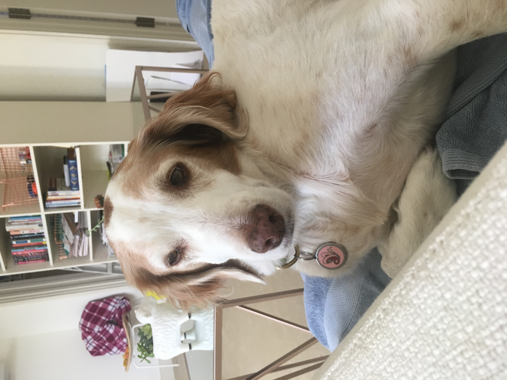

What is your name?
Malini
Where are you from?
Dallas, Texas
When is your birthday?
August 28, 2000
Why did you choose to study Communication Design?
I have a passion for graphic design, advertising, and branding.
What are you most inspired by?
Mostly other artists and also food and objects that hold meaning in my life.
What has been your favorite class so far? Why?
Typography, I think it really pushed me to learn the basics of Typography in the real world and helped me improve a lot. I also created a lot of work in that class that I'm really proud of.
What are you hoping to learn in this class?
I hope to learn a lot more about creating a website that fits my creative vision and be a lot more playful and experimental with website design.
What do you like to do in your spare time?
I love to do photography, but non-art related, I like to watch tv, eat food and desserts and dance (for fun).
When you imagine a graphic designer, what do you think they do on a day to day?
Designing emails, collaborating with a marketing team, planning photoshoots and upcoming content, designing and mocking up packaging, etc.
When you imagine a developer, what do you think they do on a day to day?
Writing code. I'm not sure what else other than writing and fixing code.
Where do you see yourself after graduating? What kind of job do you want to have?
I would love to be working in the creative department of a company that really aligns with my interests and style. I like startups a lot because it enables me to have more control and have more hand in multiple aspects of the design.
Do you consider yourself an artist, a designer, both, or neither?
I would say both. But when I talk to adults I'd rather say I'm in design school than art school because design has a better connotation that makes me seem like I can get a job.
What kind of design classes have you taken before this one?
Typography, Visual Merchandising, History, Graphic Design summer program, and Photography.
Do you know most of the students in our class already?
Only a few.
List your favorite typefaces.
- Futura
- Avenir
- Didot
- Plantin
What are you top 3 favorite colors?
Which artists do you like?
Helen Dardik, an_erin, Stephanie Gonot, Megan Madden
List out some music that you like to listen to
I like R&B, rap, pop and alternative music.
Did anything interesting happen over winter break?
Yes, I went to Peru for a week and it was really beautiful. I really want to go back!
Have you ever built a website?
Barely.
Do you have any questions for me?
Nope
What is your first memory of using the internet?
Playing games on the internet or maybe watching my brother and sister use it.
Do you have a favorite place to visit?
I love the beach, I haven't gone to one place routinely but I really want to visit Costa Rica again.
Do you speak any other languages?
I speak a little Spanish but I wouldn't say I'm bilingual.
What is your favorite food?
Chocolate
What is your favorite animal?
Dogs
Do you have a pet?
I did have a dog, she recently passed away. She was 12 years old and the only family pet we ever had.

Is there any other information you’d like me to know?
Nope